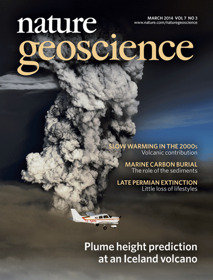

       <a href="about/staff/santer/Santer_et_al_NatGeo_2014.pdf"></a><h1>Research Highlights & Publicity</h1>
        <ul style="list-style-type:none">
            <li><a href="https://public.ornl.gov/site/bernews/search_news_action.cfm?id=595">Human versus natural causes of the mid-1970s climate anomaly</a> (April 2009)</li>
            <li><a href="https://public.ornl.gov/site/bernews/search_news_action.cfm?id=660">Exploring the role of climate model quality in detection and attribution</a> (August 2009) </li>
            <li><a href="https://public.ornl.gov/site/bernews/search_news_action.cfm?id=687">American Meteorological Society Special Group Award</a> (January 2010)</li>
            <li><a href="https://public.ornl.gov/site/bernews/search_news_action.cfm?id=867">First evidence of long-term human influence in pacific decadal oscillation</a><br> (November 2010)</li>
            <li><a href="http://www.nasonline.org/news-and-multimedia/news/2011_05_03_NAS_Election.html">Ben Santer elected to membership in the National Academy of Sciences</a> (May 2011)</li>
            <li><a href="http://sites.agu.org/honors/fellow/2467-santer/">Ben Santer elected as Fellow of the American Geophysical Union</a> (December 2011)</li>
            <li><a href="http://climatemodeling.science.energy.gov/f/Fact_Sheets/PCMDI_Fact_Sheet.pdf">Program for Climate Model Diagnosis and Intercomparison (PCMDI) fact sheet</a> (August 2013) </li>
            <li><a href="http://climatemodeling.science.energy.gov/research-highlights/contributions-radiative-forcing-and-climate-feedbacks-range-cmip5-global-warming">Contributions of radiative forcing and climate feedbacks to range of CMIP5 global warming responses</a> (September 2013)</li>
            <li><a href="http://climatemodeling.science.energy.gov/research-highlights/new-internationally-coordinated-climate-model-experiments-underway">New internationally coordinated climate model experiments underway</a> <br>(September 2013)</li>
            <br>
            <br>
            <br>
            <br>

        </ul>
